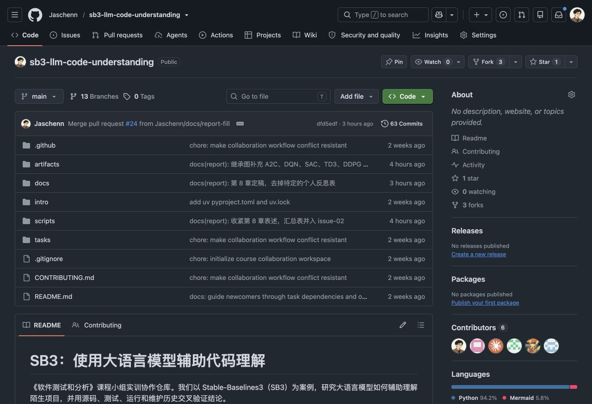
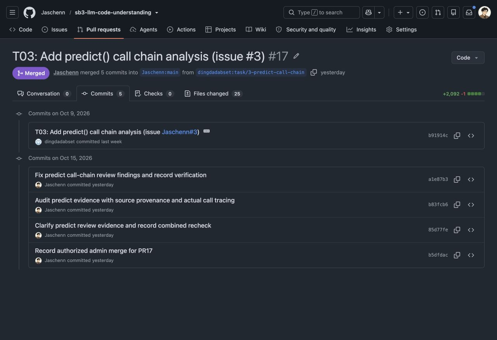
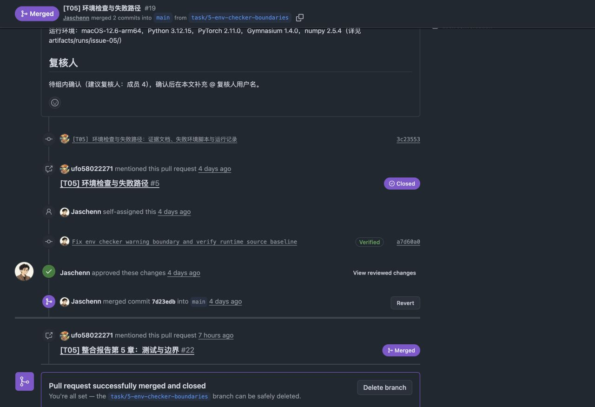
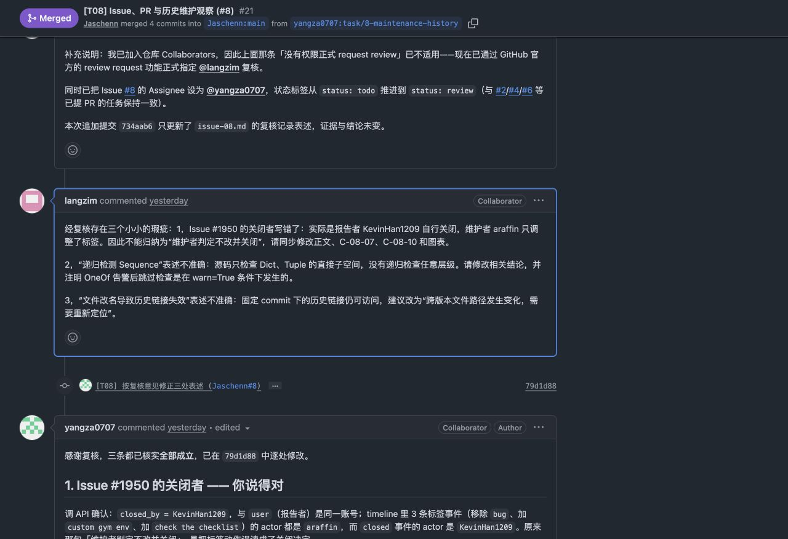
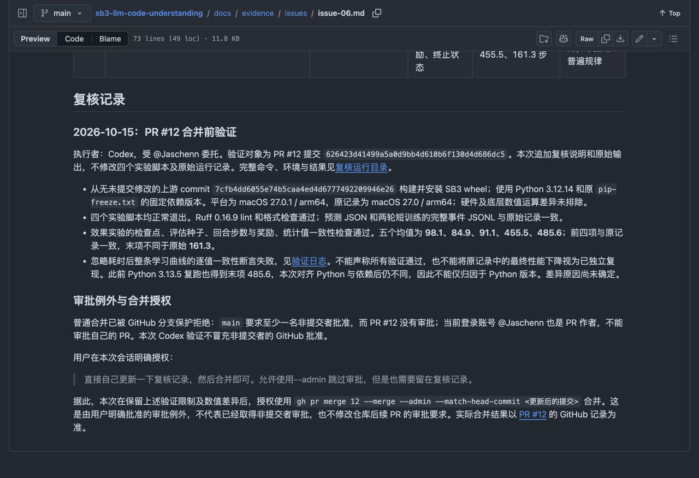

小组阅读记录：核心对象、业务调用链与结论核验
仓库怎样组织小组的探索
报告、证据、脚本与图放在同一个协作仓库，任务由 Issue 关联到 PR 和具体提交。

分工约定
Issue 写目标、交付和完成标准；成员从任务分支提交自己的证据文件。
材料组织
scripts 放核验脚本，artifacts 放图与运行结果，docs 放报告与逐项结论。
协作流程
认领 Issue，建立分支，提交 PR，再复核与整合。实际审批及例外以各 PR 记录为准。
算法继承：公共骨架与训练循环
小组先按继承关系定位入口，再沿 PPO 主线阅读训练实现。图只保留报告图 3-1 的算法分支。
公共能力放在哪里
BaseAlgorithm 负责策略解析、环境包装、预测入口和保存加载。训练接口由子类落实。
PPO 的分工
PPO.learn() 转交父类；OnPolicyAlgorithm.learn() 组织采样循环；PPO.train() 实现损失与优化步。
阅读中纠正的关系
DDPG 继承 TD3，不直接继承 OffPolicyAlgorithm。
类图状态：待验证。已有源码核对，尚缺第二类独立证据及非作者复核。
PPO 对象协作：环境、策略与数据
图节选自报告图 3-2。算法组织流程，策略计算动作和价值，buffer 暂存本轮训练数据。
创建时建立协作关系
_setup_model() 创建 policy 与 buffer。_wrap_env() 在需要时先加 Monitor，再用 DummyVecEnv 包装环境。
策略对象的范围
PPO 的 MlpPolicy 是 ActorCriticPolicy 别名。这里的网络与分布属性只按 PPO/A2C 主线讨论。
容易画错的依赖
callback 由 learn() 参数传入，并通过 init_callback(model) 获取算法引用，不是算法持有的属性。
C-02-02～05：待验证（仅源码）。预测不进入 forward 的独立运行证据见下一页。
predict()：从单个观测到离散动作
主链来自 T03 时序图及真实调用记录。配置限定为固定基线的 PPO / CartPole-v1 / MlpPolicy，确定性预测。
小组怎样确认路径
用 sys.setprofile 观察真实 API 方法顺序，并监测 ActorCriticPolicy.forward 未进入。动作相同本身只能证明输出一致。
实际触发过的错误
直接传入 (obs, info) 会在 predict 的 tuple 防护处失败。用四个变量接收 Gymnasium 的五项 step 返回值，则先在用户解包处失败。
范围限制
分类 argmax 只对应当前离散空间。Box 的 clip/unscale 和 Dict 输入由独立契约检查补充，不沿用本图的分类分布。
C-03-01～07：已支持，针对各项限定后的命题。图像转置、CNN 等分支不在本次主实验覆盖内。
预测链也经历了多轮证据修订
PR #17 的 commit 记录，补充前一页 predict 调用链的形成过程。

初稿
b91914c 提交预测链分析、时序图及运行材料。
补实际调用证据
b83fcb6 强化源码来源核对和真实调用追踪，避免只靠手动展开结果。
结论的边界
动作一致只说明输出一致。调用路径由 profile 与固定基线源码共同核对。
该 PR 的复核修订与管理员合并记录，不等同于取得独立 GitHub 审批。
learn()：外层循环组织采样与训练
T04 用真实方法边界追踪核对调用顺序。主实验：n_steps=32、n_envs=1、batch_size=16、n_epochs=2、请求 128 步。
主实验观察到什么
setup 后出现 4 轮 collect / returns / progress / dump / train，train 边界位于累计 32、64、96、128 步。
两种提前停止要区分
on_step=False 会结束采样，本轮不 train；KL 超阈值结束的是当前 train，外层 learn 仍可继续采样。
请求步数的前提
正常完成且未被 callback 提前停止时，完整 rollout 可越过请求量。续训目标基于当前累计步数增加，不能一律按从零开始计算。
C-04-01～03、08、11：源码、真实追踪及受控契约检查共同支持各项条件。
从采样数据到参数更新
同一个 policy 在两个阶段承担不同任务。下图按报告 §4.2 和训练流程图拆开采样与优化，不涉及算法收敛性证明。
buffer 的实际形状
T04 reset 后观测为 (32,1,4)，动作为 (32,1,1)，returns / advantages 为 (32,1)。展平后部分字段形状会变化。
被检查过的条件
advantage 仅在开启归一化且实际批大小大于 1 时归一化。_n_updates 计已进入的 epoch，不等于 optimizer.step 次数。
更新与效果分别报告
T04 记录 12 个参数张量变化，但三局均分由 222.3 降为 79.0。参数更新不能证明任务表现提高。
采样阶段参数不变的结论需限定默认 policy 及未修改参数的 callback（C-04-04）。
| 调用 | Sequence 返回非法字符串观测 |
|---|---|
check_env(warn=True) | 仍然通过，只有 1 条警告 |
check_env(warn=False) | AssertionError |
状态：需限定；warn=False 的失败不证明这些空间获得完整支持
环境检查：修正、批准与合并
PR #19 的时间线，补充前页 warn=True / warn=False 对照实验的协作记录。

任务交付
@ufo58022271 提交环境失败用例、证据文档和运行记录。
补齐警告前提
a7d60a0 修正 warn 边界并核对运行源码基线；W09/F12 的实验结果见证据文件。
实际 GitHub 审批
时间线有 @Jaschenn 的 Approved 事件，之后合并。这里与只有文档复核的 PR 分开表述。
或补充证据
维护侧：#2174 里 AI 的补丁经人工改写后合并。
统计为第 6 章归纳的 18 条记录，不含另列的 AI-02-01；样本非随机抽取，不代表模型整体错误率。
组员 review 怎样改变了结论
PR #21 中 @langzim 的真实评论：提出三处问题，作者在 79d1d88 中逐项修正。

纠正关闭者
Issue #1950 由报告者关闭，维护者只调整标签。
收窄行为描述
只检查直接子空间，不能称任意层级递归；OneOf 跳过检查须加 warn=True。
保留修正过程
历史链接仍可访问。作者同步改正文、证据和图，并新增检查项。
后续 @langzim 正式批准，评论确认最新提交的主要问题已改，16 项核对通过。
复跑差异已经写进仓库记录
PR #12 合并前验证说明：原始记录保留，新输出放入独立运行目录。

一致的部分
预测输出与短训练事件一致；效果实验前四个检查点的均值一致。
未复现的部分
末检查点复跑为 485.6，原记录为 161.3；差异原因未确定。
限定结论
不宣布全部复现，也不把原记录的下降当成已独立重现的现象。C-06-05 保留「需限定」。
复核执行由 Codex 受委托完成；没有冒充非提交者 GitHub 审批。